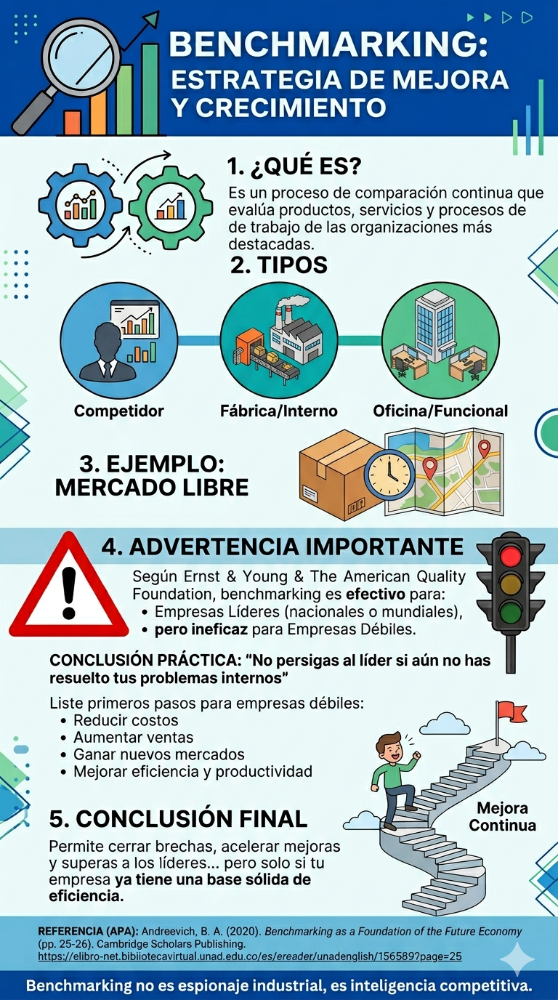

Es un proceso de comparación continua que evalúa productos, servicios y procesos de trabajo de las organizaciones más destacadas para adaptar mejores prácticas.
No es copiar, es aprender⚔️ Competitivo: vs rivales directos.
🏭 Interno: entre áreas de la misma empresa.
📊 Funcional: con empresas de otra industria.
✅ Identifica brechas de rendimiento.
✅ Acelera innovación.
✅ Reduce costos y mejora calidad.
✅ Aporta visión objetiva del mercado.

Esquema visual del proceso de Benchmarking
| Paso | Acción |
|---|---|
| 1. Problema | Entregas lentas (7-10 días en zonas alejadas) |
| 2. Benchmarking con | Amazon (centros descentralizados + IA) y Rappi (dark stores) |
| 3. Adaptación | Lanzó Mercado Envíos Flex: centros urbanos pequeños + red de entregadores |
| 4. Resultado | ✅ Entregas 24-48 hrs y reducción de costos ~15% |
📋 CONCLUSIÓN PRÁCTICA: “No persigas al líder si aún no has resuelto tus problemas internos”
Primeros pasos para empresas débiles antes de benchmarking:
5. CONCLUSIÓN FINAL
Permite cerrar brechas, acelerar mejoras y superar a los líderes... pero solo si tu empresa ya tiene una base sólida de eficiencia.